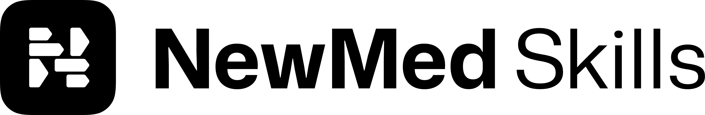
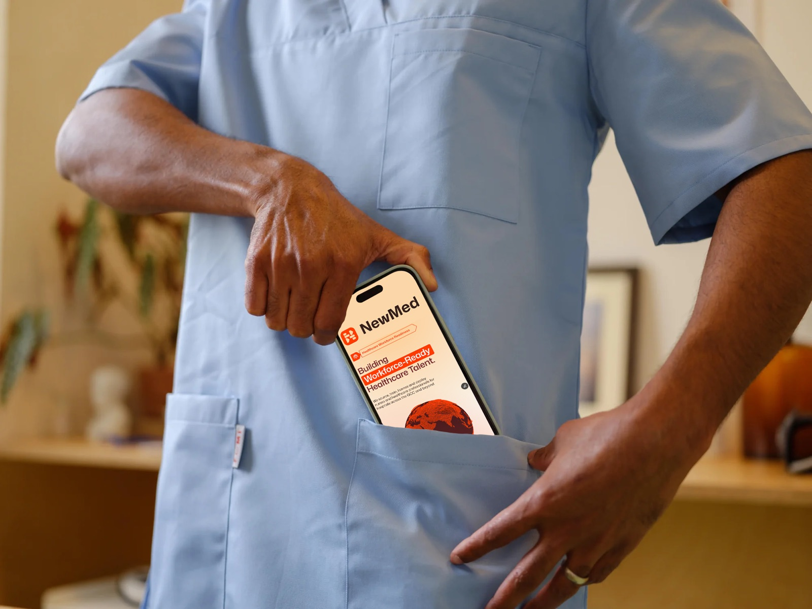
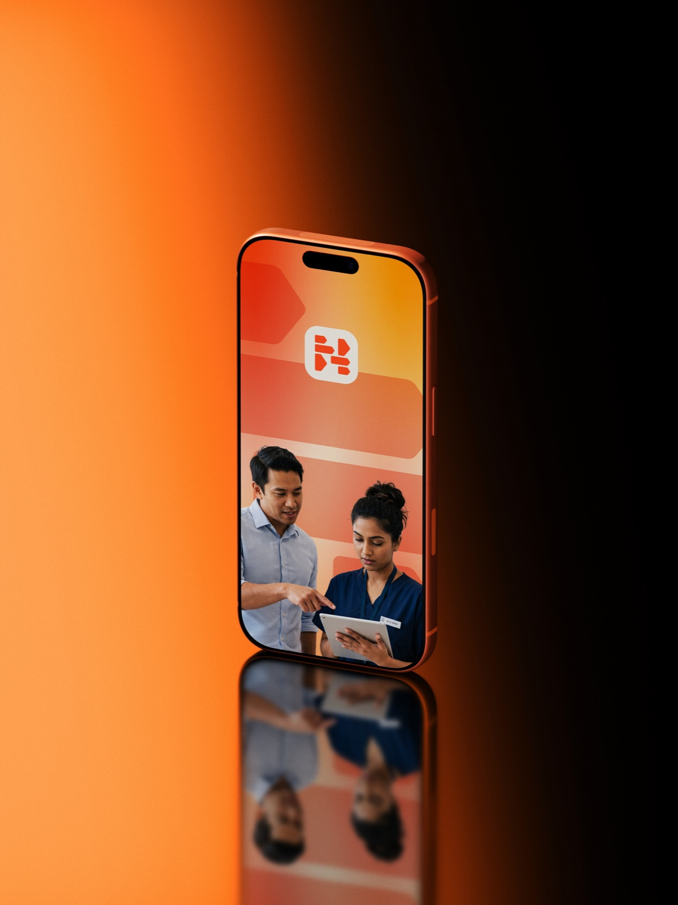
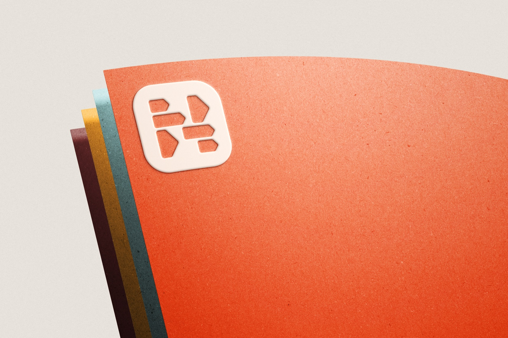
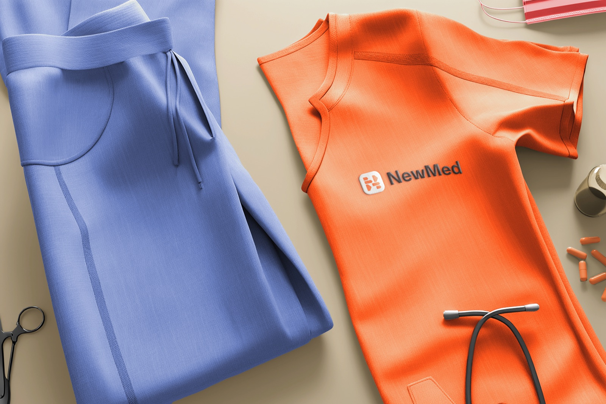
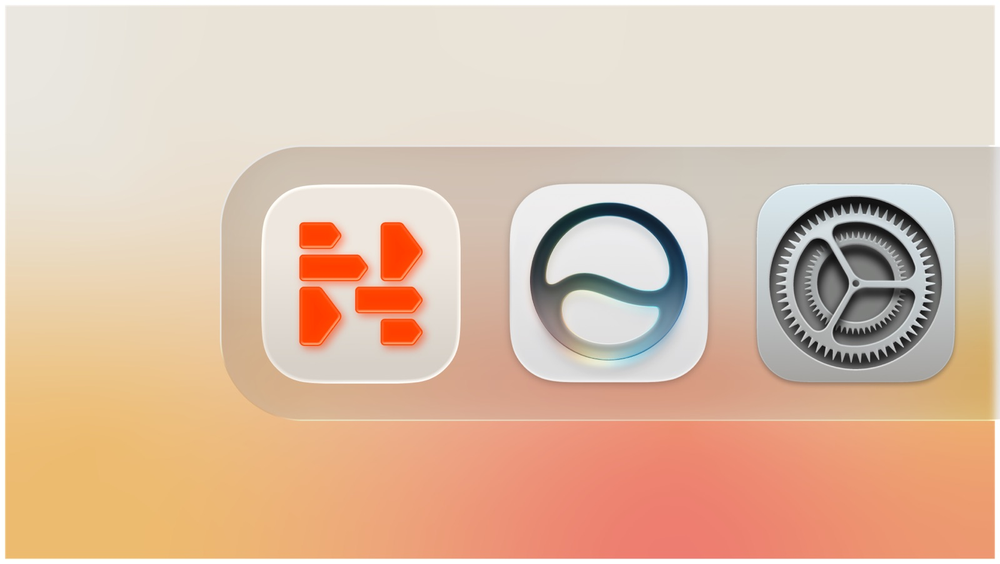
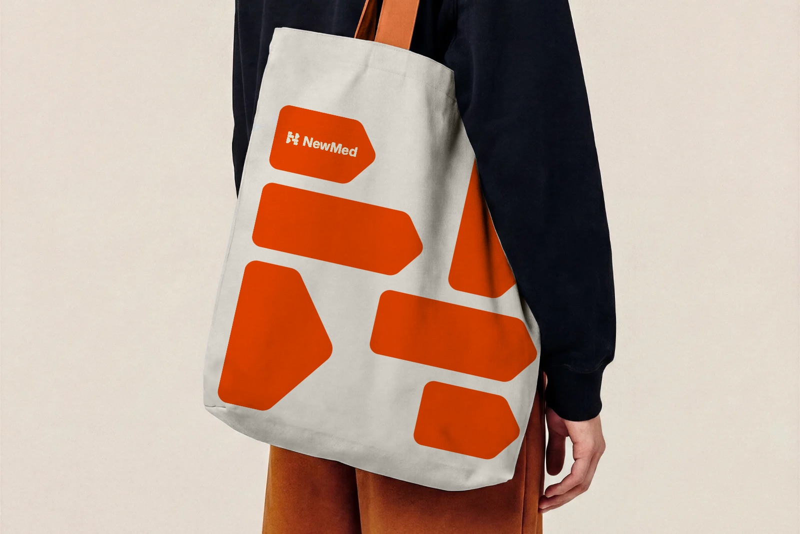
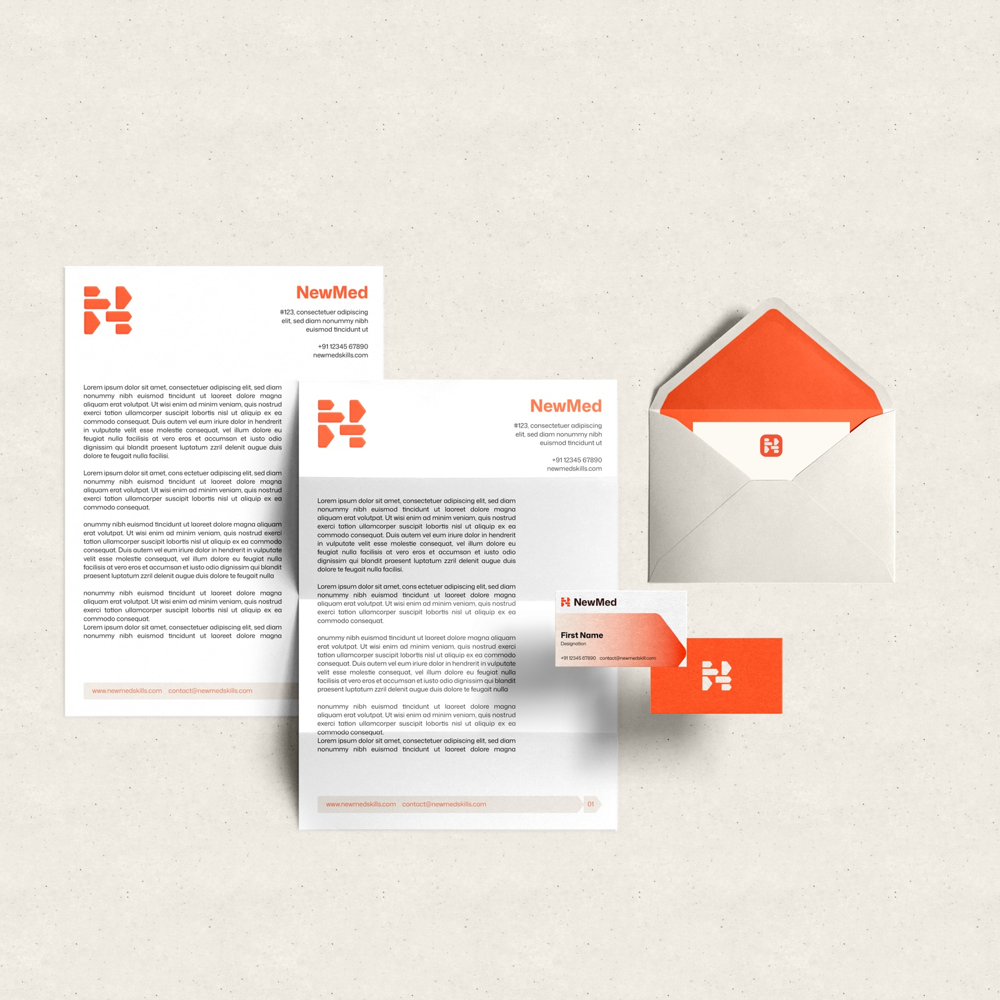
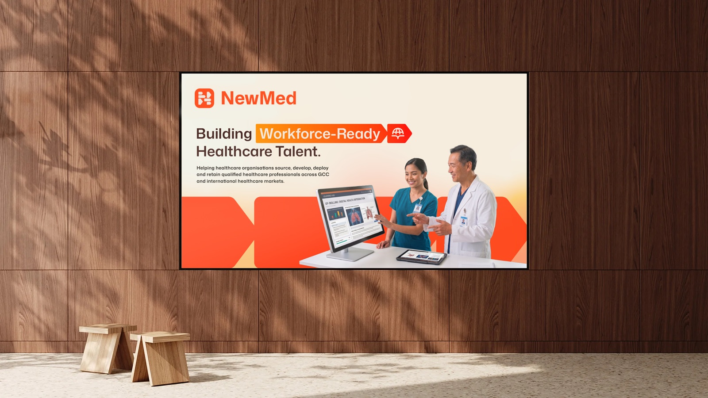
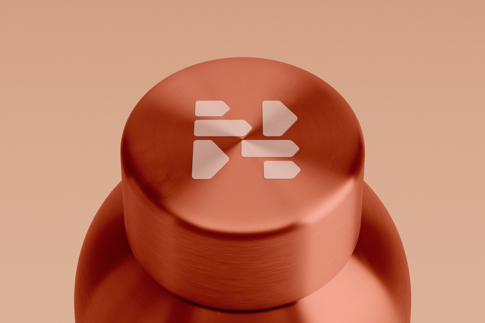

A calmer kind of healthcare hiring.
This is how NewMed Skills looks, sounds, and behaves — the standards that keep every touchpoint unmistakably ours.
What this is
The single source of truth for the NewMed Skills brand. Designers, writers, recruiters and partners use it to keep a licensing page, an app icon and a recruiter's email speaking with one voice.
How to use it
Every section states a rule and shows the reason behind it. When two options feel equally correct, choose the calmer one — that instinct is the brand. Assets and colour values are ready to copy or download throughout.
Your career shouldn't stop at a border. We're here to get you across it.
The central line of the brand — the promise everything else supports.
Contents
02 — Brand
The idea underneath.
NewMed Skills moves qualified clinicians across borders — and replaces an anxious, low-trust process with something calm, specific and sequential.
About
What we do
NewMed Skills sources, assesses, licenses and deploys workforce-ready healthcare professionals for hospitals across major geographies. One platform manages the entire journey — from first assessment to first shift — sourcing clinical talent from India, Asia and Africa and deploying licensed, verified professionals to the UK, GCC, Europe and North America.
Two people rely on us. The candidate — a nurse or doctor ready to work abroad. And the hospital — a team that needs qualified people without six months of unscreened CVs. We name every credential and system plainly — Prometric, DataFlow, licensing exams — and we speak to both audiences without changing who we are.
One platform, from first assessment to first shift.
One system manages the entire journey — sourcing, readiness, deployment and retention. Nothing handed off, nothing dropped.
Positioning
Clinical calm
Healthcare staffing is a low-trust category. Competitors sound like either body-shop salesmen — hype, urgency, promises — or enterprise software — sterile, jargon, "solutions." Both try to manufacture trust, and both fail, because trust is demonstrated, not claimed.
The opening neither competitor can occupy is clinical calm: the voice that doesn't need to raise itself to be believed. We write and design like a senior clinician speaks — someone who has done this a thousand times, states facts plainly, never oversells, and is calm precisely because they are competent.
The shape
Everything moves from → to
The brand has one direction built into it. From exam to licence. From licence to placement. From one country to the next. Our symbol is an N built entirely from chevrons — a path, not a badge. Whenever you design or write for NewMed Skills, show the reader the next step rather than a pile of features to assemble themselves.
A letter that points forward
The counters and terminals are cut as arrowheads. Read it once and it's an N; look again and it's motion — the visual form of the promise to get someone across.
The journey
Six stages, one direction
The from → to, made literal. Every candidate — and every layout — moves through the same sequence, in order. Nothing skipped, no one rushed through.
Source
India · Asia · AfricaThe largest pool of clinical talent in the world.
Assess
Every candidate measured against clinical, professional and regulatory standards.
Develop
A learning plan built around each candidate's specific gaps.
Certify
Prometric, DataFlow and licensing exams — prepared for and passed before travel.
Deploy
UK · GCC · Europe · NALicensed, verified professionals, ready from day one.
Retain
Support and development that continue long after placement.
Assessed in four areas: Clinical Competency · Professional Skills · Regulatory Readiness · Country Readiness.
Personality
Five attributes, always on
All five are present in every sentence and every layout, at every level of the register. They are the fixed identity.
Certain
Settled, factual, unhurried. Every claim carries a number or a mechanism. We inform someone competent enough to draw their own conclusion.
Plain
Clear, concrete, direct. Short sentences, one idea at a time. Written as if translating for a capable new colleague who doesn't know the acronyms yet.
Warm
Steady, human, on the reader's side. Warmth lives in naming the real stakes — fees, visas, arriving alone — not in soft words.
Guiding
Directional and sequential. From→to constructions, numbered steps, action verbs: assess, train, license, deploy, support.
Credible
Trusted, calm, unexaggerated — most of all when the stakes are high. Confidence comes from substance, never volume.
03 — Logo
The mark.
An N constructed from chevrons — forward motion made from the letter itself. Give it room, keep it in its approved colours, and never redraw it.
A note on the name
In writing, the name is always NewMed Skills — two words. The logotype draws it as a single closed wordmark; that is the artwork, not the spelling. Never type the name as one word in body copy, and never set it in all caps outside a small eyebrow label.
Lockups
One system, six configurations
Choose the lockup that fits the space, then hold it. The horizontal lockup is the default; reach for the others only when the format demands it.

{kind=link}

{kind=link}

{kind=link}
{kind=link}
{kind=link}

{kind=link}

{kind=link}
Clear space & minimum size
Give it room to breathe
Clear space
Keep clear space on all sides equal to the height of one chevron unit within the mark (x). Nothing — type, image edge or another logo — enters this zone. Recommended default; confirm against final artwork.
Minimum size
Symbol: 24 px on screen, 8 mm in print. Horizontal lockup: 120 px / 24 mm by width. Below this, legibility and the chevron detail break down. Recommended defaults.
Colour on backgrounds
Where each version goes

Misuse
Six things never to do
The mark is fixed. If a situation seems to need one of these, it needs a different lockup instead.
04 — Colour
Warm, with one cool note.
A grounded, warm palette does the everyday work. Signal Orange is used as a signal — a moment, not a wash. Click any swatch to copy its hex.
Core
Secondary & deep
Neutrals
Gradients
Balance
Roughly 70 / 20 / 10
Let neutrals carry most of the surface, ink carry the words, and orange appear where it means something — a link, a state, a single call to move. When orange starts to feel like decoration, pull it back.
Accessibility: Clinical Ink on Bone clears WCAG AA for body text. Use Signal Orange for large text, icons and accents — pair it with ink or cream for small text rather than relying on the orange alone.
05 — Typography
One typeface, used with discipline.
Mona Sans is a humanist grotesk — modern, plainly legible, and calm. It reads clearly for an audience that often reads English as a second language. Headings are set in SemiBold, body in Regular, with Medium for emphasis — never a heavier weight, never a second face.
Type scale
A clear hierarchy
Setting words
How we type
01 Sentence case
Headings and buttons use sentence case. All-caps is reserved for small eyebrow labels only.
02 Short lines
Headlines under 8 words. Body sentences under 20. One idea per sentence.
03 Numerals that work
Use figures when a number is doing work — a 1:3 ratio, 4 steps. The specificity is the point.
04 Generous measure
Keep body text around 60–70 characters per line and leading relaxed. Calm reads unhurried.
Fallback stack for systems without Mona Sans: system-ui, "Segoe UI", Roboto, Helvetica, Arial, sans-serif. Mona Sans is open-source under the SIL Open Font License.
06 — Voice & Tone
Write as a senior clinician speaks.
Someone who has done this a thousand times, states facts plainly, never oversells, and is calm precisely because they are competent. Every rule below serves that one idea.
You are not persuading. You are informing someone competent enough to draw their own conclusion.
The register dial
One voice. It never gets louder — it gets nearer.
Register is how close the voice stands to the reader. Pick one level per piece, based on how much the reader already trusts you and how much is emotionally at stake.
A sentence at Level 5 and one at Level 1 should read as the same calm, competent person — one filing a note, the other looking you in the eye.
The rules
Mechanical and non-negotiable
Naming
Always NewMed Skills — two words, capital N, M, S. Never one word, never all-caps in body, never "NMS" unless truly needed and only after the full name has appeared once. Name real systems — DHA, SCFHS, Prometric, DataFlow — never "the relevant authorities."
Pronouns
Candidates are you. Hospitals are your team / your hospital. NewMed Skills is always we — never "the company," never "NewMed Skills believes."
Acronyms
Spell out on first use, then abbreviate: Dubai Health Authority (DHA), thereafter DHA. Don't assume the reader knows it — a nurse abroad may not.
Structure
Every benefit answers "how?" in the same breath: "Faster hiring — because screening is already done," not "Faster hiring." Split marketing sentences into separate ones.
Banned words
If it's on a corporate bingo card, it's out
Reaching for one of these is a signal the sentence has gone abstract. Replace the word and the vagueness beneath it.
Before anything ships
The 10-second check
- 1Does every claim carry a number or a mechanism?
- 2Could this sentence appear on any other B2B site? If yes, rewrite.
- 3Is the warmth in the specifics, or just in adjectives? Move it to the specifics.
- 4Have I shown the path, or only listed features?
- 5Any banned words hiding in there?
Pass all five and it sounds like NewMed Skills.
07 — Applications
The system in the world.
The identity is built to travel — from a phone screen to a set of scrubs. A few reference applications showing the mark, palette and type working together.
The chevron symbol alone on Signal Orange — no wordmark at this size.

Where most candidates first meet the brand — calm, clear, one step at a time.

The Sunrise gradient carrying the icon on a launch surface.

The full-colour lockup on warm neutral paper stock.

The symbol embroidered where clinicians actually wear the brand.

The mark holding its own beside the software clinicians use daily.

Symbol and wordmark on everyday carry — restrained, single-colour.

Decks that stay plain and specific — substance over noise.

Interface where every stage of the journey is named and visible.

The symbol reads at small scale on a moulded lid.
08 — Downloads
Take what you need.
Every logo in three formats, the colour values, and the typeface. SVG for screen and scaling, PNG for quick placement, PDF for print.
Logo files
{kind=link}
{kind=link}
{kind=link}
Colour & type
{kind=link}
Something missing? Co-branding rules, motion, iconography and photography direction are the natural next sections. This manual is built to grow — new sections drop straight into the sidebar.
NewMed Skills — Brand Guidelines · Version 1.0 · 2026 · Confidential. For internal and partner use.